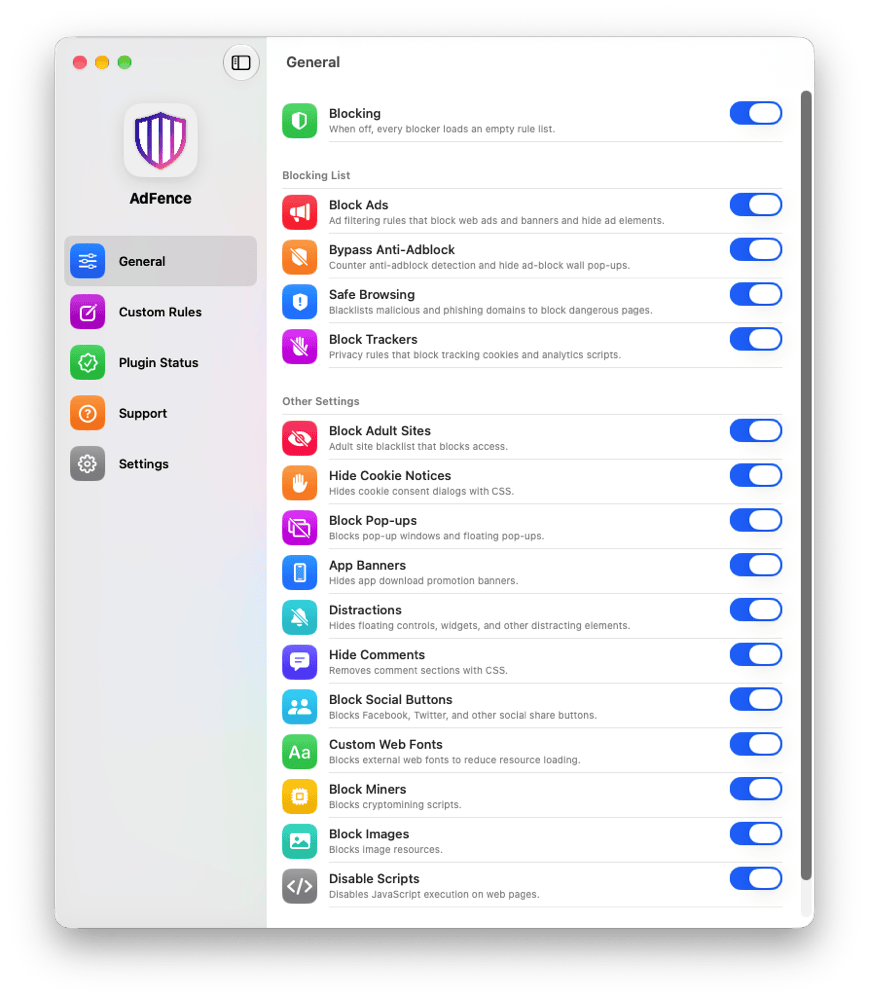
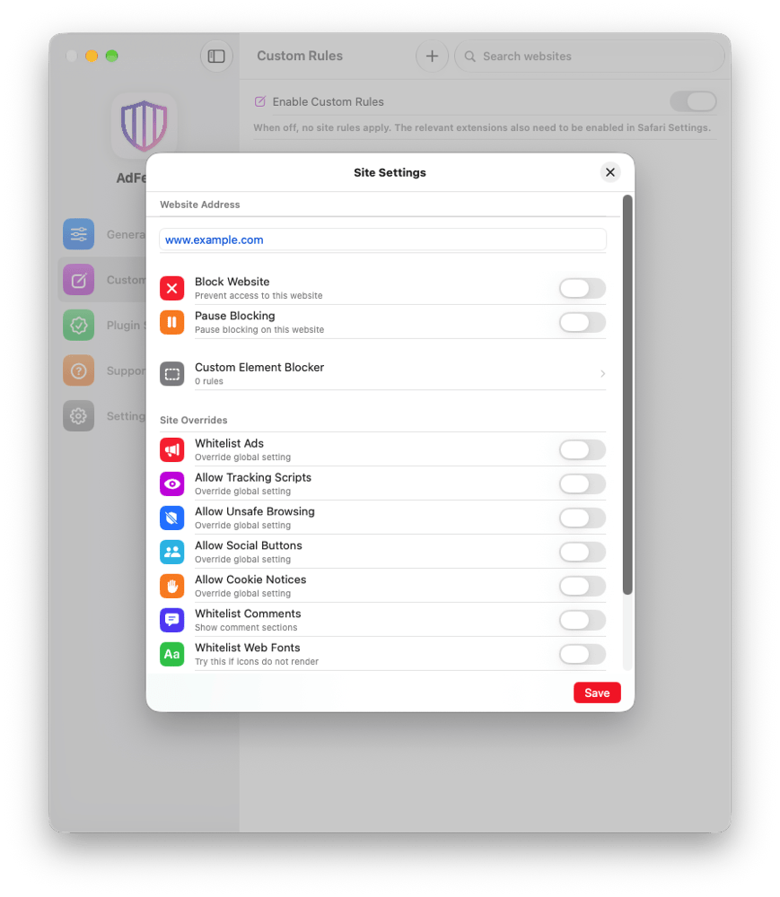

Se l’hai configurato su un iPhone, il percorso lo conosci: Impostazioni → App → Safari → Estensioni. Sul Mac non c’è un passaggio equivalente nell’app Impostazioni. Safari ha le proprie preferenze, e tutto ciò che riguarda quali estensioni vengono eseguite si decide dentro Safari. L’app AdFence è l’altro posto, e contiene gli interruttori che stabiliscono cosa viene filtrato.
È proprio questa separazione il motivo più comune per cui un Mac ha l’app installata, sembra configurato correttamente e mostra comunque ogni annuncio. Safari non esegue nulla finché l’estensione non è spuntata, e spuntarla non cambia cosa viene filtrato finché gli interruttori dell’app non lo dicono.
In breve: in Safari apri Safari → Impostazioni (⌘,) e spunta AdFence nella scheda Estensioni. Poi apri l’app AdFence, resta su General e verifica che Blocking sia attivo insieme alle regole che vuoi. Ricarica la pagina.
1. Attivare l’estensione in Safari
- In Safari, scegli Safari → Impostazioni dalla barra dei menu (⌘,).
- Apri la scheda Estensioni.
- Spunta AdFence nell’elenco a sinistra. Le otto estensioni compaiono come voci separate, ciascuna con la propria casella.
- Se navighi in finestre private, spunta Consenti in navigazione privata per le estensioni che vuoi attive lì.

La nota nel riquadro di destra merita una lettura: un blocco dei contenuti «non ha l’autorizzazione a leggere, modificare o trasmettere i contenuti di alcuna pagina web». Non è un errore. L’estensione fornisce le liste di regole, Safari le applica. È così che funziona questo tipo di blocco, ed è per questo che non ha bisogno della tua cronologia.
2. Scegliere cosa viene filtrato nell’app
Apri AdFence e resta sulla scheda General. Blocking in cima è l’interruttore principale; sotto, Blocking List raccoglie le regole — Block Ads, Bypass Anti-Adblock, Safe Browsing, Block Trackers — e Other Settings ancora sotto quelle a livello di pagina, dagli avvisi sui cookie ai pop-up e ai commenti. Viene filtrato solo ciò che è attivo.

L’ordine conta. L’app scrive le regole, Safari le applica: dopo aver cambiato un interruttore, torna in Safari e ricarica la pagina — una pagina già caricata conserva ciò che aveva scaricato prima della modifica.
Controlli per sito sul Mac
Due meccanismi stanno sopra gli interruttori globali, ed è facile confonderli.
- Nell’app: Site Settings per un indirizzo, con Pause Blocking per ritirarsi su quel sito e Site Overrides per consentire un singolo filtro. Le voci si raccolgono nella scheda Custom.
- In Safari: una pagina può essere ricaricata senza blocchi dei contenuti dal menu del pulsante di ricarica. È temporaneo e vale solo per quella scheda — la ricarica successiva riporta il blocco.
Il primo è permanente; il secondo è una via di fuga. Se ti accorgi di usare spesso il secondo sullo stesso sito, il primo è lo strumento migliore.

Cosa cambia rispetto all’iPhone
- Il percorso: Safari → Impostazioni → Estensioni sul Mac, non Impostazioni → App → Safari. Non c’è un passaggio nelle Impostazioni di sistema.
- Il dispositivo: le estensioni si attivano per dispositivo. Mac e iPhone hanno bisogno ciascuno della propria spunta una volta; poi ognuno mantiene i propri interruttori.
- Il browser: le estensioni di Safari girano solo in Safari. Sul Mac è facile controllare un sito in Chrome o Firefox e concludere che il blocco è rotto — non è mai stato applicato lì.
Se sul Mac compaiono ancora annunci
Controlla in quest’ordine — i primi due risolvono la maggior parte dei casi:
- L’estensione è spuntata. Riapri la scheda Estensioni di Safari; gli aggiornamenti e le migrazioni del Mac possono togliere la spunta.
- L’interruttore principale è attivo. Blocking nell’app deve esserlo; altrimenti ogni estensione carica una lista di regole vuota.
- Il sito non è in pausa. Guarda la scheda Custom dell’app.
- Stai guardando il browser giusto. Gli annunci in Chrome o Firefox riguardano un altro programma, non un’impostazione.
- L’annuncio è di quelli che un blocco dei contenuti non raggiunge. Gli annunci dentro un video di YouTube e i link aperti nei browser integrati di altre app sono i due casi tipici.
Se invece una pagina si comporta in modo strano — un player che non parte, un modulo che non si invia — gli strumenti per sito sono la risposta giusta prima di toccare le impostazioni globali. E se è l’estensione stessa a sembrare in causa, il controllo da 30 secondi è in questo articolo.
Domande frequenti
Serve l’app sul Mac oltre che sull’iPhone?
Le estensioni si attivano per dispositivo, quindi il Mac ha bisogno dell’app installata e della sua estensione spuntata una volta in Safari. Vale lo stesso per un iPad. Dopo, ogni dispositivo mantiene i propri interruttori.
Blocca gli annunci in Chrome o Firefox sul mio Mac?
No. Un’estensione di Safari gira solo dentro Safari, quindi AdFence non fa nulla in Chrome, Firefox o qualsiasi altro browser sul Mac. Quei browser hanno bisogno di un blocco proprio.
Funziona nelle finestre di navigazione privata sul Mac?
Solo se l’estensione è consentita lì. Nelle impostazioni Estensioni di Safari, con AdFence selezionata, spunta Consenti in navigazione privata per ogni estensione che vuoi attiva nelle finestre private.
Safari dice che l’estensione non ha il permesso di leggere le pagine. È normale?
Sì. Un blocco dei contenuti fornisce liste di regole che Safari applica da sé; non legge, modifica o trasmette il contenuto delle pagine. Quella frase nel riquadro delle estensioni descrive come funziona la tecnologia, non un errore.
Perché un sito mostra ancora annunci sul mio Mac?
Controlla il sito in Site Settings: se è stato messo in pausa per qualsiasi motivo, resta in pausa finché non lo rimuovi. Gli annunci dentro un flusso video e quelli nei browser integrati di altre app sono casi separati che nessun blocco dei contenuti di Safari può raggiungere.